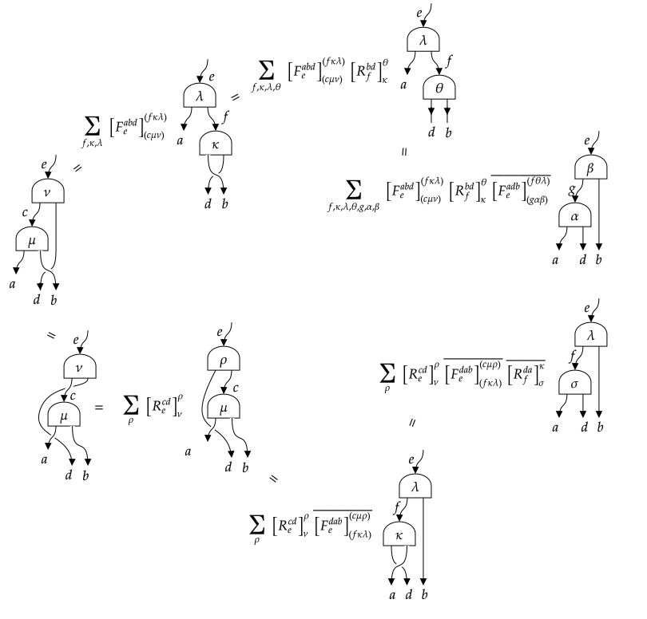
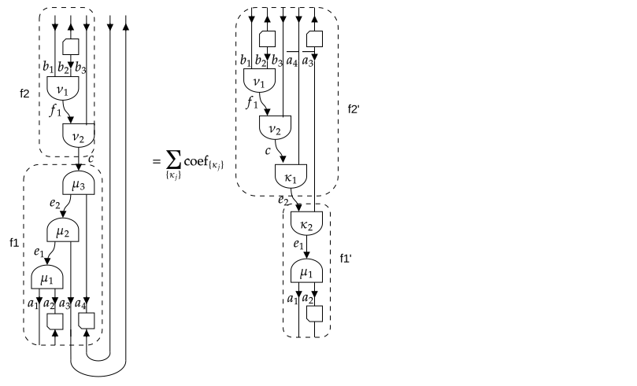

Sectors, representation spaces and fusion trees
Symmetries in a physical system often result in tensors which are invariant under the action of the symmetry group, where this group acts as a tensor product of group actions on every tensor index separately. The group action on a single index, or thus, on the corresponding vector space, can be decomposed into irreducible representations (irreps). Here, we restrict to unitary representations, such that the corresponding vector spaces also have a natural Euclidean inner product. In particular, the Euclidean inner product between two vectors is invariant under the group action and thus transforms according to the trivial representation of the group.
The corresponding vector spaces will be canonically represented as $V = ⨁_a ℂ^{n_a} ⊗ R_{a}$, where $a$ labels the different irreps, $n_a$ is the number of times irrep $a$ appears and $R_a$ is the vector space associated with irrep $a$. Irreps are also known as spin sectors (in the case of $\mathsf{SU}_2$) or charge sectors (in the case of $\mathsf{U}_1$), and we henceforth refer to $a$ as a sector. As discussed in the section on categories, and briefly summarized below, the approach we follow does in fact go beyond the case of irreps of groups, and sectors would more generally correspond to simple objects in a unitary ribbon fusion category. Nonetheless, every step can be appreciated by using the representation theory of $\mathsf{SU}_2$ or $\mathsf{SU}_3$ as example. For practical reasons, we assume that there is a canonical order of the sectors, so that the vector space $V$ is completely specified by the values of $n_a$.
The gain in efficiency (both in memory occupation and computation time) obtained from using (technically: equivariant) tensor maps is that, by Schur's lemma, they are block diagonal in the basis of coupled sectors. To exploit this block diagonal form, it is however essential that we know the basis transform from the individual (uncoupled) sectors appearing in the tensor product form of the domain and codomain, to the totally coupled sectors that label the different blocks. We refer to the latter as block sectors. The transformation from the uncoupled sectors in the domain (or codomain) of the tensor map to the block sector is encoded in a fusion tree (or splitting tree). Essentially, it is a sequential application of pairwise fusion as described by the group's Clebsch–Gordan (CG) coefficients. However, it turns out that we do not need the actual CG coefficients, but only how they transform under transformations such as interchanging the order of the incoming irreps or interchanging incoming and outgoing irreps. This information is known as the topological data of the group, i.e. mainly the F-symbols, which are also known as recoupling coefficients or 6j-symbols (more accurately, the F-symbol is actually Racah's W-coefficients in the case of $\mathsf{SU}_2$).
Below, we describe how to specify a certain type of sector and what information about them needs to be implemented. Then, we describe how to build a space $V$ composed of a direct sum of different sectors. In the third section, we explain the details of fusion trees, i.e. their construction and manipulation. Finally, we elaborate on the case of general fusion categories and the possibility of having fermionic or anyonic twists. But first, we provide a quick theoretical overview of the required data of the representation theory of a group. We refer to the section on categories, and in particular the subsection on topological data of a unitary fusion category, for further details.
Representation theory and unitary fusion categories
Let the different irreps or sectors be labeled as $a$, $b$, $c$, … First and foremost, we need to specify the fusion rules $a ⊗ b = ⨁ N^{ab}_{c} c$ with $N^{ab}_{c}$ some non-negative integers. There should always exists a unique trivial sector $u$ (called the identity object $I$ or $1$ in the language of categories) such that $a ⊗ u = a = u ⊗ a$. Furthermore, there should exist a unique sector $\bar{a}$ such that $N^{a\bar{a}}_{u} = 1$, whereas for all $b \neq \bar{a}$, $N^{ab}_{u} = 0$. For unitary irreps of groups, $\bar{a}$ corresponds to the complex conjugate of the representation $a$, or a representation isomorphic to it. For example, for the representations of $\mathsf{SU}_2$, the trivial sector corresponds to spin zero and all irreps are self-dual (i.e. $a = \bar{a}$), meaning that the conjugate representation is isomorphic to the non-conjugated one (they are however not equal but related by a similarity transform).
The meaning of the fusion rules is that the space of transformations $R_a ⊗ R_b → R_c$ (or vice versa) has dimension $N^{ab}_c$. In particular, we assume the existence of a basis consisting of unitary tensor maps $X^{ab}_{c,μ} : R_c → R_a ⊗ R_b$ with $μ = 1, …, N^{ab}_c$ such that
$(X^{ab}_{c,μ})^† X^{ab}_{c,ν} = δ_{μ,ν} \mathrm{id}_{R_c}$
and
$\sum_{c} \sum_{μ = 1}^{N^{ab}_c} X^{ab}_{c,μ} (X^{ab}_{c,μ})^\dagger = \mathrm{id}_{R_a ⊗ R_b}$
The tensors $X^{ab}_{c,μ}$ are the splitting tensors, their hermitian conjugate are the fusion tensors. They are only determined up to a unitary basis transform within the space, i.e. acting on the multiplicity label $μ = 1, …, N^{ab}_c$. For $\mathsf{SU}_2$, where $N^{ab}_c$ is zero or one and the multiplicity labels are absent, the entries of $X^{ab}_{c,μ}$ are precisely given by the CG coefficients. The point is that we do not need to know the tensors $X^{ab}_{c,μ}$ explicitly, but only the topological data of (the representation category of) the group, which describes the following transformation:
F-move or recoupling: the transformation between $(a ⊗ b) ⊗ c$ to $a ⊗ (b ⊗ c)$:
$(X^{ab}_{e,μ} ⊗ \mathrm{id}_c) ∘ X^{ec}_{d,ν} = ∑_{f,κ,λ} [F^{abc}_{d}]_{e,μν}^{f,κλ} (\mathrm{id}_a ⊗ X^{bc}_{f,κ}) ∘ X^{af}_{d,λ}$
Braiding or permuting as defined by $τ_{a,b}: R_a ⊗ R_b → R_b ⊗ R_a$: $τ_{R_a,R_b} ∘ X^{ab}_{c,μ} = ∑_{ν} [R^{ab}_c]^ν_μ X^{ba}_{c,ν}$
The dimensions of the spaces $R_a$ on which representation $a$ acts are denoted as $d_a$ and referred to as quantum dimensions. In particular $d_u = 1$ and $d_a = d_{\bar{a}}$. This information is also encoded in the F-symbol as $d_a = | [F^{a \bar{a} a}_a]^u_u |^{-1}$. Note that there are no multiplicity labels in that particular F-symbol as $N^{a\bar{a}}_u = 1$.
There is a graphical representation associated with the fusion tensors and their manipulations, which we summarize here:
As always, we refer to the subsection on topological data of a unitary fusion category for further details.
Finally, for the implementation, it will be useful to distinguish between an number of different possibilities regarding the fusion rules. If, for every $a$ and $b$, there is a unique $c$ such that $a ⊗ b = c$ (i.e. $N^{ab}_{c} = 1$ and $N^{ab}_{c′} = 0$ for all other $c′$), the category is abelian. Indeed, the representations of a group have this property if and only if the group multiplication law is commutative. In that case, all spaces $R_{a}$ associated with the representation are one-dimensional and thus trivial. In all other cases, the category is non-abelian. We find it useful to further distinguish between categories which have all $N^{ab}_c$ equal to zero or one (such that no multiplicity labels are needed), e.g. the representations of $\mathsf{SU}_2$, and those where some $N^{ab}_c$ are larger than one, e.g. the representations of $\mathsf{SU}_3$.
Sectors
We introduce a new abstract type to represent different possible sectors
abstract type Sector endAny concrete subtype of Sector should be such that its instances represent a consistent set of sectors, corresponding to the irreps of some group, or, more generally, the simple objects of a (unitary) fusion category, as reviewed in the subsections on fusion categories and their topological data within the introduction to category theory. Throughout TensorKit.jl, the method sectortype can be used to query the subtype of Sector associated with a particular object, i.e. a vector space, fusion tree, tensor map, or a sector. It works on both instances and in the type domain, and its use will be illustrated further on.
The minimal data to completely specify a type of sector are
- the fusion rules, i.e. $a ⊗ b = ⨁ N^{ab}_{c} c$; this is implemented by a function
Nsymbol(a,b,c) - the list of fusion outputs from $a ⊗ b$; while this information is contained in $N^{ab}_c$, it might be costly or impossible to iterate over all possible values of
cand testNsymbol(a,b,c); instead we implement fora ⊗ bto return an iterable object (e.g. tuple, array or a custom Julia type that listens toBase.iterate) and which generates allcfor which $N^{ab}_c ≠ 0$ (just once even if $N^{ab}_c>1$) - the identity object
u, such that $a ⊗ u = a = u ⊗ a$; this is implemented by the functionone(a)(and also in type domain) from Julia Base - the dual or conjugate representation $\overline{a}$ for which $N^{a\bar{a}}_{u} = 1$; this is implemented by
conj(a)from Julia Base;dual(a)also works as alias, butconj(a)is the method that should be defined - the F-symbol or recoupling coefficients $[F^{abc}_{d}]^f_e$, implemented as the function
Fsymbol(a,b,c,d,e,f) - the R-symbol $R^{ab}_c$, implemented as the function
Rsymbol(a,b,c)
For practical reasons, we also require some additional methods to be defined:
isreal(::Type{<:Sector})returns whether the topological data of this type of sector is real-valued or not (in which case it is complex-valued). Note that this does not necessarily require that the representation itself, or the Clebsch-Gordan coefficients, are real. There is a fallback implementation that checks whether the F-symbol and R-symbol evaluated with all sectors equal to the identity sector have realeltype.hash(a, h)creates a hash of sectors, because sectors and objects created from them are used as keys in lookup tables (i.e. dictionaries)isless(a,b)associates a canonical order to sectors (of the same type), in order to unambiguously represent representation spaces $V = ⨁_a ℂ^{n_a} ⊗ R_{a}$.
Further information, such as the quantum dimensions $d_a$ and Frobenius-Schur indicator $χ_a$ (only if $a == \overline{a}$) are encoded in the F-symbol. They are obtained as dim(a) and frobeniusschur(a). These functions have default definitions which extract the requested data from Fsymbol(a,conj(a),a,a,one(a),one(a)), but they can be overloaded in case the value can be computed more efficiently.
We also define a parametric type to represent an indexable iterator over the different values of a sector as
struct SectorValues{G<:Sector} end
Base.IteratorEltype(::Type{<:SectorValues}) = HasEltype()
Base.eltype(::Type{SectorValues{G}}) where {G<:Sector} = G
Base.values(::Type{G}) where {G<:Sector} = SectorValues{G}()Note that an instance of the singleton type SectorValues{G} is obtained as values(G). A new sector G<:Sector should define
Base.iterate(::SectorValues{G}[, state]) = ...
Base.IteratorSize(::Type{SectorValues{G}}) = # HasLenght() or IsInfinite()
# if previous function returns HasLength():
Base.length(::SectorValues{G}) = ...
Base.getindex(::SectorValues{G}, i::Int) = ...
findindex(::SectorValues{G}, c::G) = ...If the number of values in a sector G is finite (i.e. IteratorSize(values(G)) == HasLength()), the methods getindex and findindex provide a way to map the different sector values from and to the standard range 1, 2, …, length(values(G)). This is used to efficiently represent RepresentationSpace objects for this type of sector, as discussed in the next section on Representation Spaces. Note that findindex acts similar to Base.indexin, but with the order of the arguments reversed (so that is more similar to getindex), and returns an Int rather than an Array{0,Union{Int,Nothing}}.
It is useful to distinguish between three cases with respect to the fusion rules. For irreps of Abelian groups, we have that for every $a$ and $b$, there exists a unique $c$ such that $a ⊗ b = c$, i.e. there is only a single fusion channel. This follows simply from the fact that all irreps are one-dimensional. All other cases are referred to as non-abelian, i.e. the irreps of a non-abelian group or some more general fusion category. We still distinguish between the case where all entries of $N^{ab}_c ≦ 1$, i.e. they are zero or one. In that case, $[F^{abc}_{d}]^f_e$ and $R^{ab}_c$ are scalars. If some $N^{ab}_c > 1$, it means that the same sector $c$ can appear more than once in the fusion product of $a$ and $b$, and we need to introduce some multiplicity label $μ$ for the different copies. We implement a "trait" (similar to IndexStyle for AbstractArrays in Julia Base), i.e. a type hierarchy
abstract type FusionStyle end
struct Abelian <: FusionStyle
end
abstract type NonAbelian <: FusionStyle end
struct SimpleNonAbelian <: NonAbelian # non-abelian fusion but multiplicity free
end
struct DegenerateNonAbelian <: NonAbelian # non-abelian fusion with multiplicities
endNew sector types G<:Sector should then indicate which fusion style they have by defining FusionStyle(::Type{G}).
In a similar manner, it is useful to distinguish between different styles of braiding. Remember that for group representations, braiding acts as swapping or permuting the vector spaces involved. By definition, applying this operation twice leads us back to the original situation. If that is the case, the braiding is said to be symmetric. For more general fusion categories, associated with the physics of anyonic particles, this is generally not the case and, as a result, permutations of tensor indices are not unambiguously defined. The correct description is in terms of the braid group. This will be discussed in more detail below. Fermions are somewhat in between, as their braiding is symmetric, but they have a non-trivial twist. We thereto define a new type hierarchy
abstract type BraidingStyle end # generic braiding
abstract type SymmetricBraiding <: BraidingStyle end
struct Bosonic <: SymmetricBraiding end
struct Fermionic <: SymmetricBraiding end
struct Anyonic <: BraidingStyle endNew sector types G<:Sector should then indicate which fusion style they have by defining BraidingStyle(::Type{G}). Note that Bosonic() braiding does not mean that all permutations are trivial and $R^{ab}_c = 1$, but that $R^{ab}_c R^{ba}_c = 1$. For example, for the irreps of $\mathsf{SU}_2$, the R-symbol associated with the fusion of two spin-1/2 particles to spin zero is $-1$, i.e. the singlet of two spin-1/2 particles is antisymmetric. For a Bosonic() braiding style, all twists are simply $+1$. The case of fermions and anyons are discussed below.
Before discussing in more detail how a new sector type should be implemented, let us study the cases which have already been implemented. Currently, they all correspond to the irreps of groups.
Existing group representations
The first sector type is called Trivial, and corresponds to the case where there is actually no symmetry, or thus, the symmetry is the trivial group with only an identity operation and a trivial representation. Its representation theory is particularly simple:
struct Trivial <: Sector
end
Base.one(a::Sector) = one(typeof(a))
Base.one(::Type{Trivial}) = Trivial()
Base.conj(::Trivial) = Trivial()
⊗(::Trivial, ::Trivial) = (Trivial(),)
Nsymbol(::Trivial, ::Trivial, ::Trivial) = true
Fsymbol(::Trivial, ::Trivial, ::Trivial, ::Trivial, ::Trivial, ::Trivial) = 1
Rsymbol(::Trivial, ::Trivial, ::Trivial) = 1
Base.isreal(::Type{Trivial}) = true
FusionStyle(::Type{Trivial}) = Abelian()
BraidingStyle(::Type{Trivial}) = Bosonic()The Trivial sector type is special cased in the construction of tensors, so that most of these definitions are not actually used.
For all abelian groups, we gather a number of common definitions
abstract type AbelianIrrep <: Sector end
Base.@pure FusionStyle(::Type{<:AbelianIrrep}) = Abelian()
Base.@pure BraidingStyle(::Type{<:AbelianIrrep}) = Bosonic()
Nsymbol(a::G, b::G, c::G) where {G<:AbelianIrrep} = c == first(a ⊗ b)
Fsymbol(a::G, b::G, c::G, d::G, e::G, f::G) where {G<:AbelianIrrep} =
Int(Nsymbol(a,b,e)*Nsymbol(e,c,d)*Nsymbol(b,c,f)*Nsymbol(a,f,d))
frobeniusschur(a::AbelianIrrep) = 1
Bsymbol(a::G, b::G, c::G) where {G<:AbelianIrrep} = Float64(Nsymbol(a, b, c))
Rsymbol(a::G, b::G, c::G) where {G<:AbelianIrrep} = Float64(Nsymbol(a, b, c))
Base.isreal(::Type{<:AbelianIrrep}) = trueWith these common definition, we implement the representation theory of the two most common Abelian groups, namely $ℤ_N$
struct ZNIrrep{N} <: AbelianIrrep
n::Int8
function ZNIrrep{N}(n::Integer) where {N}
new{N}(mod(n, N))
end
end
Base.one(::Type{ZNIrrep{N}}) where {N} =ZNIrrep{N}(0)
Base.conj(c::ZNIrrep{N}) where {N} = ZNIrrep{N}(-c.n)
⊗(c1::ZNIrrep{N}, c2::ZNIrrep{N}) where {N} = (ZNIrrep{N}(c1.n+c2.n),)
Base.IteratorSize(::Type{SectorValues{ZNIrrep{N}}}) where N = HasLength()
Base.length(::SectorValues{ZNIrrep{N}}) where N = N
Base.iterate(::SectorValues{ZNIrrep{N}}, i = 0) where N =
return i == N ? nothing : (ZNIrrep{N}(i), i+1)
Base.getindex(::SectorValues{ZNIrrep{N}}, i::Int) where N =
1 <= i <= N ? ZNIrrep{N}(i-1) : throw(BoundsError(values(ZNIrrep{N}), i))
findindex(::SectorValues{ZNIrrep{N}}, c::ZNIrrep{N}) where N = c.n + 1and $\mathsf{U}_1$
struct U1Irrep <: AbelianIrrep
charge::HalfInt
end
Base.one(::Type{U1Irrep}) = U1Irrep(0)
Base.conj(c::U1Irrep) = U1Irrep(-c.charge)
⊗(c1::U1Irrep, c2::U1Irrep) = (U1Irrep(c1.charge+c2.charge),)
Base.IteratorSize(::Type{SectorValues{U1Irrep}}) = IsInfinite()
Base.iterate(::SectorValues{U1Irrep}, i = 0) =
return i <= 0 ? (U1Irrep(half(i)), (-i + 1)) : (U1Irrep(half(i)), -i)
# the following are not used and thus not really necessary
function Base.getindex(::SectorValues{U1Irrep}, i::Int)
i < 1 && throw(BoundsError(values(U1Irrep), i))
return U1Irrep(iseven(i) ? half(i>>1) : -half(i>>1))
end
findindex(::SectorValues{U1Irrep}, c::U1Irrep) = (n = twice(c.charge); 2*abs(n)+(n<=0))We also define some abbreviated Unicode aliases
const ℤ₂ = ZNIrrep{2}
const ℤ₃ = ZNIrrep{3}
const ℤ₄ = ZNIrrep{4}
const U₁ = U1IrrepIn the definition of U1Irrep, HalfInt<:Number is a Julia type defined in HalfIntegers.jl, which is also used for SU2Irrep below, that stores integer or half integer numbers using twice their value. Strictly speaking, the linear representations of U₁ can only have integer charges, and fractional charges lead to a projective representation. It can be useful to allow half integers in order to describe spin 1/2 systems with an axis rotation symmetry. As a user, you should not worry about the details of HalfInt, and additional methods for automatic conversion and pretty printing are provided, as illustrated by the following example
julia> U₁(0.5)
U₁(1/2)
julia> U₁(0.4)
ERROR: InexactError: Int64(0.8)
julia> U₁(1) ⊗ U₁(1//2)
(U₁(3/2),)
julia> u = first(U₁(1) ⊗ U₁(1//2))
U₁(3/2)
julia> Nsymbol(u, conj(u), one(u))
true
julia> z = ℤ₃(1)
ℤ₃(1)
julia> z ⊗ z
(ℤ₃(2),)
julia> conj(z)
ℤ₃(2)
julia> one(z)
ℤ₃(0)For ZNIrrep{N}, we use an Int8 for compact storage, assuming that this type will not be used with N>64 (we need 2*(N-1) <= 127 in order for a ⊗ b to work correctly).
As a further remark, even in the abelian case where a ⊗ b is equivalent to a single new label c, we return it as an iterable container, in this case a one-element tuple (c,).
As mentioned above, we also provide the following definitions
Base.hash(c::ZNIrrep{N}, h::UInt) where {N} = hash(c.n, h)
Base.isless(c1::ZNIrrep{N}, c2::ZNIrrep{N}) where {N} = isless(c1.n, c2.n)
Base.hash(c::U1Irrep, h::UInt) = hash(c.charge, h)
Base.isless(c1::U1Irrep, c2::U1Irrep) where {N} =
isless(abs(c1.charge), abs(c2.charge)) || zero(HalfInt) < c1.charge == -c2.chargeSince sectors or objects made out of tuples of sectors (see the section on Fusion Trees below) are often used as keys in look-up tables (i.e. subtypes of AbstractDictionary in Julia), it is important that they can be hashed efficiently. We just hash the sectors above based on their numerical value. Note that hashes will only be used to compare sectors of the same type. The isless function provides a canonical order for sectors of a given type G<:Sector, which is useful to uniquely and unambiguously specify a representation space $V = ⨁_a ℂ^{n_a} ⊗ R_{a}$, as described in the section on Representation spaces below.
The first example of a non-abelian representation category is that of $\mathsf{SU}_2$, the implementation of which is summarized by
struct SU2Irrep <: Sector
j::HalfInt
end
Base.one(::Type{SU2Irrep}) = SU2Irrep(zero(HalfInt))
Base.conj(s::SU2Irrep) = s
⊗(s1::SU2Irrep, s2::SU2Irrep) = SectorSet{SU2Irrep}(abs(s1.j-s2.j):(s1.j+s2.j))
dim(s::SU2Irrep) = twice(s.j)+1
Base.@pure FusionStyle(::Type{SU2Irrep}) = SimpleNonAbelian()
Base.isreal(::Type{SU2Irrep}) = true
Nsymbol(sa::SU2Irrep, sb::SU2Irrep, sc::SU2Irrep) = WignerSymbols.δ(sa.j, sb.j, sc.j)
Fsymbol(s1::SU2Irrep, s2::SU2Irrep, s3::SU2Irrep,
s4::SU2Irrep, s5::SU2Irrep, s6::SU2Irrep) =
WignerSymbols.racahW(s1.j, s2.j, s4.j, s3.j, s5.j, s6.j)*sqrt(dim(s5)*dim(s6))
function Rsymbol(sa::SU2Irrep, sb::SU2Irrep, sc::SU2Irrep)
Nsymbol(sa, sb, sc) || return 0.
iseven(convert(Int, sa.j+sb.j-sc.j)) ? 1.0 : -1.0
end
Base.hash(s::SU2Irrep, h::UInt) = hash(s.j, h)
Base.isless(s1::SU2Irrep, s2::SU2Irrep) = isless(s1.j, s2.j)
const SU₂ = SU2Irrep
const SO₃ = SU2Irrep
Base.IteratorSize(::Type{SectorValues{SU2Irrep}}) = IsInfinite()
Base.iterate(::SectorValues{SU2Irrep}, i = 0) = (SU2Irrep(half(i)), i+1)
# unused and not really necessary:
Base.getindex(::SectorValues{SU2Irrep}, i::Int) =
1 <= i ? SU2Irrep(half(i-1)) : throw(BoundsError(values(SU2Irrep), i))
findindex(::SectorValues{SU2Irrep}, s::SU2Irrep) = twice(s.j)+1and some methods for pretty printing and converting from real numbers to irrep labels. As one can notice, the topological data (i.e. Nsymbol and Fsymbol) are provided by the package WignerSymbols.jl. The iterable a ⊗ b is a custom type, that the user does not need to care about. Some examples
julia> s = SU₂(3//2)
SU₂(3/2)
julia> conj(s)
SU₂(3/2)
julia> dim(s)
4
julia> collect(s ⊗ s)
4-element Array{SU₂,1}:
0
1
2
3
julia> for s2 in s ⊗ s
@show s2
@show Nsymbol(s, s, s2)
@show Rsymbol(s, s, s2)
end
s2 = SU₂(0)
Nsymbol(s, s, s2) = true
Rsymbol(s, s, s2) = -1.0
s2 = SU₂(1)
Nsymbol(s, s, s2) = true
Rsymbol(s, s, s2) = 1.0
s2 = SU₂(2)
Nsymbol(s, s, s2) = true
Rsymbol(s, s, s2) = -1.0
s2 = SU₂(3)
Nsymbol(s, s, s2) = true
Rsymbol(s, s, s2) = 1.0A final non-abelian representation theory is that of the semidirect product $\mathsf{U}₁ ⋉ ℤ_2$, where in the context of quantum systems, this occurs in the case of systems with particle hole symmetry and the non-trivial element of $ℤ_2$ acts as charge conjugation $C$. It has the effect of interchaning $\mathsf{U}_1$ irreps $n$ and $-n$, and turns them together in a joint 2-dimensional index, except for the case $n=0$. Irreps are therefore labeled by integers $n ≧ 0$, however for $n=0$ the $ℤ₂$ symmetry can be realized trivially or non-trivially, resulting in an even and odd one- dimensional irrep with $\mathsf{U})_1$ charge $0$. Given $\mathsf{U}_1 ≂ \mathsf{SO}_2$, this group is also simply known as $\mathsf{O}_2$, and the two representations with $n = 0$ are the scalar and pseudo-scalar, respectively. However, because we also allow for half integer representations, we refer to it as CU₁ or CU1Irrep in full.
struct CU1Irrep <: Irrep
j::HalfInt # value of the U1 charge
s::Int # rep of charge conjugation:
# if j == 0, s = 0 (trivial) or s = 1 (non-trivial),
# else s = 2 (two-dimensional representation)
# Let constructor take the actual half integer value j
function CU1Irrep(j::Real, s::Int = ifelse(j>zero(j), 2, 0))
if ((j > zero(j) && s == 2) || (j == zero(j) && (s == 0 || s == 1)))
new(j, s)
else
error("Not a valid CU₁ irrep")
end
end
end
Base.one(::Type{CU1Irrep}) = CU1Irrep(zero(HalfInt), 0)
Base.conj(c::CU1Irrep) = c
dim(c::CU1Irrep) = ifelse(c.j == zero(HalfInt), 1, 2)
Base.@pure FusionStyle(::Type{CU1Irrep}) = SimpleNonAbelian()
...
const CU₁ = CU1IrrepThe rest of the implementation can be read in the source code, but is rather long due to all the different cases for the arguments of Fsymbol.
So far, no sectors have been implemented with FusionStyle(G) == DegenerateNonAbelian(), though an example would be the representation theory of $\mathsf{SU}_3$. Such sectors are not yet fully supported; certain operations remain to be implemented. Furthermore, the topological data of the representation theory of such groups is not readily available and needs to be computed.
Combining different sectors
It is also possible to define two or more different types of symmetries, e.g. when the total symmetry group is a direct product of individual simple groups. Such sectors are obtained using the binary operator ×, which can be entered as \times+TAB. Some examples
julia> a = ℤ₃(1) × U₁(1)
WARNING: both LinearAlgebra and TensorKit export "×"; uses of it in module ex-sectors must be qualified
ERROR: UndefVarError: × not defined
julia> typeof(a)
ERROR: UndefVarError: a not defined
julia> conj(a)
ERROR: UndefVarError: a not defined
julia> one(a)
ERROR: UndefVarError: a not defined
julia> dim(a)
ERROR: UndefVarError: a not defined
julia> collect(a ⊗ a)
ERROR: UndefVarError: a not defined
julia> FusionStyle(a)
ERROR: UndefVarError: a not defined
julia> b = ℤ₃(1) × SU₂(3//2)
ERROR: UndefVarError: × not defined
julia> typeof(b)
ERROR: UndefVarError: b not defined
julia> conj(b)
ERROR: UndefVarError: b not defined
julia> one(b)
ERROR: UndefVarError: b not defined
julia> dim(b)
ERROR: UndefVarError: b not defined
julia> collect(b ⊗ b)
ERROR: UndefVarError: b not defined
julia> FusionStyle(b)
ERROR: UndefVarError: b not defined
julia> c = SU₂(1) × SU₂(3//2)
ERROR: UndefVarError: × not defined
julia> typeof(c)
ERROR: UndefVarError: c not defined
julia> conj(c)
ERROR: UndefVarError: c not defined
julia> one(c)
ERROR: UndefVarError: c not defined
julia> dim(c)
ERROR: UndefVarError: c not defined
julia> collect(c ⊗ c)
ERROR: UndefVarError: c not defined
julia> FusionStyle(c)
ERROR: UndefVarError: c not definedWe refer to the source file of ProductSector for implementation details.
Defining a new type of sector
By now, it should be clear how to implement a new Sector subtype. Ideally, a new G<:Sector type is a struct G ... end (immutable) that has isbitstype(G) == true (see Julia's manual), and implements the following minimal set of methods
Base.one(::Type{G}) = G(...)
Base.conj(a::G) = G(...)
Base.isreal(::Type{G}) = ... # true or false
TensorKit.FusionStyle(::Type{G}) = ... # Abelian(), SimpleNonAbelian(), DegenerateNonAbelian()
TensorKit.BraidingStyle(::Type{G}) = ... # Bosonic(), Fermionic(), Anyonic()
TensorKit.Nsymbol(a::G, b::G, c::G) = ...
# Bool or Integer if FusionStyle(G) == DegenerateNonAbelian()
Base.:⊗(a::G, b::G) = ... # some iterable object that generates all possible fusion outputs
TensorKit.Fsymbol(a::G, b::G, c::G, d::G, e::G, f::G)
TensorKit.Rsymbol(a::G, b::G, c::G)
Base.hash(a::G, h::UInt)
Base.isless(a::G, b::G)
Base.iterate(::TensorKit.SectorValues{G}[, state]) = ...
Base.IteratorSize(::Type{TensorKit.SectorValues{G}}) = ... # HasLenght() or IsInfinite()
# if previous function returns HasLength():
Base.length(::TensorKit.SectorValues{G}) = ...
Base.getindex(::TensorKit.SectorValues{G}, i::Int) = ...
TensorKit.findindex(::TensorKit.SectorValues{G}, c::G) = ...Additionally, suitable definitions can be given for
TensorKit.dim(a::G) = ...
TensorKit.frobeniusschur(a::G) = ...
TensorKit.Bsymbol(a::G, b::G, c::G) = ...Out of these, we have not yet encountered the Frobenius-Schur indicator and the B-symbol. They were both defined in the section on topological data of fusion categories and are fully determined by the F-symbol, just like the quantum dimensions. Hence, there is a default implementation for each of these three functions that just relies on Fsymbol, and alternative definitions need to be given only if a more efficient version is available.
If FusionStyle(G) == DegenerateNonAbelian(), then the multiple outputs c in the tensor product of a and b will be labeled as i=1, 2, …, Nsymbol(a,b,c). Optionally, a different label can be provided by defining
TensorKit.vertex_ind2label(i::Int, a::G, b::G, c::G) = ...
# some label, e.g. a `Char` or `Symbol`The following function will then automatically determine the corresponding label type (which should not vary, i.e. vertex_ind2label should be type stable)
Base.@pure vertex_labeltype(G::Type{<:Sector}) =
typeof(vertex_ind2label(1, one(G), one(G), one(G)))The following type, which already appeared in the implementation of SU2Irrep above, can be useful for providing the return type of a ⊗ b
struct SectorSet{G<:Sector,F,S}
f::F
set::S
end
...
function Base.iterate(s::SectorSet{G}, args...) where {G<:Sector}
next = iterate(s.set, args...)
next === nothing && return nothing
val, state = next
return convert(G, s.f(val)), state
endThat is, SectorSet(f, set) behaves as an iterator that applies x->convert(G, f(x)) on the elements of set; if f is not provided it is just taken as the function identity.
Generalizations
As mentioned before, the framework for sectors outlined above depends is in one-to-one correspondence to the topological data for specifying a unitary (spherical and braided, and hence ribbon) fusion category, which was reviewed at the end of the introduction to category theory. For such categories, the objects are not necessarily vector spaces and the fusion and splitting tensors $X^{ab}_{c,μ}$ do not necessarily exist as actual tensors. However, the morphism spaces $c → a ⊗ b$ still behave as vector spaces, and the $X^{ab}_{c,μ}$ act as generic basis for that space. As TensorKit.jl does not rely on the $X^{ab}_{c,μ}$ themselves (even when they do exist) it can also deal with such general fusion categories. Note, though, that when $X^{ab}_{c,μ}$ does exist, it is available as fusiontensor(a,b,c[,μ]) (even though it is actually the splitting tensor) and can be useful for checking purposes, as illustrated below.
Representation spaces
We have introduced Sector subtypes as a way to label the irreps or sectors in the decomposition $V = ⨁_a ℂ^{n_a} ⊗ R_{a}$. To actually represent such spaces, we now also introduce a corresponding type RepresentationSpace, which is a subtype of EuclideanSpace{ℂ}, i.e.
abstract type RepresentationSpace{G<:Sector} <: EuclideanSpace{ℂ} endNote that this is still an abstract type, nonetheless it will be the type name that the user calls to create specific instances.
Types
The actual implementation comes in two flavors
struct GenericRepresentationSpace{G<:Sector} <: RepresentationSpace{G}
dims::SectorDict{G,Int}
dual::Bool
end
struct FiniteRepresentationSpace{G<:Sector,N} <: RepresentationSpace{G}
dims::NTuple{N,Int}
dual::Bool
endThe GenericRepresentationSpace implementation stores the different sectors $a$ and their corresponding degeneracy $n_a$ as key value pairs in an Associative array, i.e. a dictionary dims::SectorDict. SectorDict is a constant type alias for a specific dictionary implementation, either Julia's default Dict or the type SortedVectorDict implemented in TensorKit.jl. Note that only sectors $a$ with non-zero $n_a$ are stored. This implementation is used for sectors G which have IteratorSize(values(G)) == IsInfinite().
If IteratorSize(values(G)) == HasLength(), the second implementation FiniteRepresentationSpace is used instead, which stores the values $n_a$ for the different sectors in a tuple, the lenght of which is given by N = length(values(G)). The methods getindex(values(G), i) and findindex(values(G), a) are used to map between a sector a::G and a corresponding index i ∈ 1:N.
As mentioned, creating instances of these types goes via RepresentationSpace, using a list of pairs a=>n_a, i.e. V = RepresentationSpace(a=>n_a, b=>n_b, c=>n_c). In this case, the sector type G is inferred from the sectors. However, it is often more convenient to specify the sector type explicitly, since then the sectors are automatically converted to the correct type, i.e. compare
julia> RepresentationSpace{U1Irrep}(0=>3, 1=>2, -1=>1) ==
RepresentationSpace(U1Irrep(0)=>3, U1Irrep(1)=>2, U1Irrep(-1)=>1)
trueor using Unicode
julia> RepresentationSpace{U₁}(0=>3, 1=>2, -1=>1) ==
RepresentationSpace(U₁(0)=>3, U₁(-1)=>1, U₁(1)=>2)
trueHowever, both are still to long for the most common cases. Therefore, we also have ℂ[G<:Sector] as synonym for RepresentationSpace{G}, or simply ℂ[a=>n_a, b=>n_b, c=>n_c] as alternative to RepresentationSpace(a=>n_a, b=>n_b, c=>n_c). Furthermore, for the common groups, we provide a number of type aliases, both in plain ASCII and in Unicode
const ℤ₂Space = ZNSpace{2}
const ℤ₃Space = ZNSpace{3}
const ℤ₄Space = ZNSpace{4}
const U₁Space = GenericRepresentationSpace{U₁}
const CU₁Space = GenericRepresentationSpace{CU₁}
const SU₂Space = GenericRepresentationSpace{SU₂}
# non-Unicode alternatives
const Z2Space = ℤ₂Space
const Z3Space = ℤ₃Space
const Z4Space = ℤ₄Space
const U1Space = U₁Space
const CU1Space = CU₁Space
const SU2Space = SU₂Spacesuch that we can simply write
julia> RepresentationSpace{U₁}(0=>3, 1=>2, -1=>1) ==
RepresentationSpace(U₁(0)=>3, U₁(-1)=>1, U₁(1)=>2) ==
U₁Space(0=>3, -1=>1, 1=>2) ==
ℂ[U₁(0)=>3, U₁(-1)=>1, U₁(1)=>2] ==
ℂ[U₁](0=>3, 1=>2, -1=>1)
trueMethods
There are a number of methods to work with instances V of RepresentationSpace. The function sectortype returns the type of the sector labels. It also works on other vector spaces, in which case it returns Trivial. The function sectors returns an iterator over the different sectors a with non-zero n_a, for other ElementarySpace types it returns (Trivial,). The degeneracy dimensions n_a can be extracted as dim(V, a), it properly returns 0 if sector a is not present in the decomposition of V. With hassector(V, a) one can check if V contains a sector a with dim(V,a)>0. Finally, dim(V) returns the total dimension of the space V, i.e. $∑_a n_a d_a$ or thus dim(V) = sum(dim(V,a) * dim(a) for a in sectors(V)). Note that a representation space V has certain sectors a with dimensions n_a, then its dual V' will report to have sectors dual(a), and dim(V', dual(a)) == n_a. There is a subtelty regarding the difference between the dual of a representation space $R_a^*$, on which the conjugate representation acts, and the representation space of the irrep dual(a)==conj(a) that is isomorphic to the conjugate representation, i.e. $R_{\bar{a}} ≂ R_a^*$ but they are not equal. We return to this in the section on fusion trees.
Other methods for ElementarySpace, such as dual, fuse and flip also work. In fact, RepresentationSpace is the reason flip exists, cause in this case it is different then dual. The existence of flip originates from the non-trivial isomorphism between $R_{\overline{a}}$ and $R_{a}^*$, i.e. the representation space of the dual $\overline{a}$ of sector $a$ and the dual of the representation space of sector $a$. In order for flip(V) to be isomorphic to V, it is such that, if V = RepresentationSpace(a=>n_a,...) then flip(V) = dual(RepresentationSpace(dual(a)=>n_a,....)).
Furthermore, for two spaces V1 = RepresentationSpace(a=>n1_a, ...) and V2 = RepresentationSpace(a=>n2_a, ...), we have infinum(V1,V2) = RepresentationSpace(a=>min(n1_a,n2_a), ....) and similarly for supremum, i.e. they act on the degeneracy dimensions of every sector separately. Therefore, it can be that the return value of infinum(V1,V2) or supremum(V1,V2) is neither equal to V1 or V2.
For W a ProductSpace{<:RepresentationSpace{G},N}, sectors(W) returns an iterator that generates all possible combinations of sectors as represented as NTuple{G,N}. The function dims(W, as) returns the corresponding tuple with degeneracy dimensions, while dim(W, as) returns the product of these dimensions. hassector(W, as) is equivalent to dim(W, as)>0. Finally, there is the function blocksectors(W) which returns a list (of type Vector) with all possible "block sectors" or total/coupled sectors that can result from fusing the individual uncoupled sectors in W. Correspondingly, blockdim(W, a) counts the total dimension of coupled sector a in W. The machinery for computing this is the topic of the next section on Fusion trees, but first, it's time for some examples.
Examples
Let's start with an example involving $\mathsf{U}_1$:
julia> V1 = RepresentationSpace{U₁}(0=>3, 1=>2, -1=>1)
U₁Space(0=>3, 1=>2, -1=>1)
julia> V1 == U1Space(0=>3, 1=>2, -1=>1) == U₁Space(-1=>1, 1=>2,0=>3) # order doesn't matter
true
julia> (sectors(V1)...,)
(U₁(0), U₁(1), U₁(-1))
julia> dim(V1, U₁(1))
2
julia> dim(V1', U₁(1)) == dim(V1, conj(U₁(1))) == dim(V1, U₁(-1))
true
julia> hassector(V1, U₁(1))
true
julia> hassector(V1, U₁(2))
false
julia> dual(V1)
U₁Space(0=>3, 1=>2, -1=>1)'
julia> flip(V1)
U₁Space(0=>3, 1=>1, -1=>2)'
julia> dual(V1) ≅ V1
false
julia> flip(V1) ≅ V1
true
julia> V2 = U1Space(0=>2, 1=>1, -1=>1, 2=>1, -2=>1)
U₁Space(0=>2, 1=>1, -1=>1, 2=>1, -2=>1)
julia> infinum(V1,V2)
U₁Space(0=>2, 1=>1, -1=>1)
julia> supremum(V1,V2)
U₁Space(0=>3, 1=>2, -1=>1, 2=>1, -2=>1)
julia> ⊕(V1,V2)
U₁Space(0=>5, 1=>3, -1=>2, 2=>1, -2=>1)
julia> W = ⊗(V1,V2)
(U₁Space(0=>3, 1=>2, -1=>1) ⊗ U₁Space(0=>2, 1=>1, -1=>1, 2=>1, -2=>1))
julia> collect(sectors(W))
3×5 Array{Tuple{Any,Any},2}:
(U₁(0), U₁(0)) (U₁(0), U₁(1)) … (U₁(0), U₁(2)) (U₁(0), U₁(-2))
(U₁(1), U₁(0)) (U₁(1), U₁(1)) (U₁(1), U₁(2)) (U₁(1), U₁(-2))
(U₁(-1), U₁(0)) (U₁(-1), U₁(1)) (U₁(-1), U₁(2)) (U₁(-1), U₁(-2))
julia> dims(W, (U₁(0), U₁(0)))
(3, 2)
julia> dim(W, (U₁(0), U₁(0)))
6
julia> hassector(W, (U₁(0), U₁(0)))
true
julia> hassector(W, (U₁(2), U₁(0)))
false
julia> fuse(W)
U₁Space(0=>9, 1=>8, -1=>7, 2=>5, -2=>4, 3=>2, -3=>1)
julia> (blocksectors(W)...,)
(U₁(0), U₁(1), U₁(-1), U₁(2), U₁(-2), U₁(3), U₁(-3))
julia> blockdim(W, U₁(0))
9and then with $\mathsf{SU}_2$:
julia> V1 = RepresentationSpace{SU₂}(0=>3, 1//2=>2, 1=>1)
SU₂Space(0=>3, 1/2=>2, 1=>1)
julia> V1 == SU2Space(0=>3, 1/2=>2, 1=>1) == SU₂Space(0=>3, 0.5=>2, 1=>1)
true
julia> (sectors(V1)...,)
(SU₂(0), SU₂(1/2), SU₂(1))
julia> dim(V1, SU₂(1))
1
julia> dim(V1', SU₂(1)) == dim(V1, conj(SU₂(1))) == dim(V1, SU₂(1))
true
julia> dim(V1)
10
julia> hassector(V1, SU₂(1))
true
julia> hassector(V1, SU₂(2))
false
julia> dual(V1)
SU₂Space(0=>3, 1/2=>2, 1=>1)'
julia> flip(V1)
SU₂Space(0=>3, 1/2=>2, 1=>1)'
julia> V2 = SU2Space(0=>2, 1//2=>1, 1=>1, 3//2=>1, 2=>1)
SU₂Space(0=>2, 1/2=>1, 1=>1, 3/2=>1, 2=>1)
julia> infinum(V1,V2)
SU₂Space(0=>2, 1/2=>1, 1=>1)
julia> supremum(V1,V2)
SU₂Space(0=>3, 1/2=>2, 1=>1, 3/2=>1, 2=>1)
julia> ⊕(V1,V2)
SU₂Space(0=>5, 1/2=>3, 1=>2, 3/2=>1, 2=>1)
julia> W = ⊗(V1,V2)
(SU₂Space(0=>3, 1/2=>2, 1=>1) ⊗ SU₂Space(0=>2, 1/2=>1, 1=>1, 3/2=>1, 2=>1))
julia> collect(sectors(W))
3×5 Array{Tuple{Any,Any},2}:
(SU₂(0), SU₂(0)) (SU₂(0), SU₂(1/2)) … (SU₂(0), SU₂(2))
(SU₂(1/2), SU₂(0)) (SU₂(1/2), SU₂(1/2)) (SU₂(1/2), SU₂(2))
(SU₂(1), SU₂(0)) (SU₂(1), SU₂(1/2)) (SU₂(1), SU₂(2))
julia> dims(W, (SU₂(0), SU₂(0)))
(3, 2)
julia> dim(W, (SU₂(0), SU₂(0)))
6
julia> hassector(W, (SU₂(0), SU₂(0)))
true
julia> hassector(W, (SU₂(2), SU₂(0)))
false
julia> fuse(W)
SU₂Space(0=>9, 1/2=>11, 1=>11, 3/2=>9, 2=>7, 5/2=>3, 3=>1)
julia> (blocksectors(W)...,)
(SU₂(0), SU₂(1/2), SU₂(1), SU₂(3/2), SU₂(2), SU₂(5/2), SU₂(3))
julia> blockdim(W, SU₂(0))
9Fusion trees
The gain in efficiency (both in memory occupation and computation time) obtained from using symmetric (equivariant) tensor maps is that, by Schur's lemma, they are block diagonal in the basis of coupled sectors, i.e. they exhibit block sparsity. To exploit this block diagonal form, it is however essential that we know the basis transform from the individual (uncoupled) sectors appearing in the tensor product form of the domain and codomain, to the totally coupled sectors that label the different blocks. We refer to the latter as block sectors, as we already encountered in the previous section blocksectors and blockdim defined on the type ProductSpace.
This basis transform consists of a basis of inclusion and projection maps, denoted as $X^{a_1a_2…a_N}_{c,α}: R_c → R_{a_1} ⊗ R_{a_2} ⊗ … ⊗ R_{a_N}$ and their adjoints $(X^{a_1a_2…a_N}_{c,α})^†$, such that
$(X^{a_1a_2…a_N}_{c,α})^† ∘ X^{a_1a_2…a_N}_{c′,α′} = δ_{c,c′} δ_{α,α′} \mathrm{id}_c$
and
$∑_{c,α} X^{a_1a_2…a_N}_{c,α} ∘ (X^{a_1a_2…a_N}_{c,α})^† = \mathrm{id}_{a_1 ⊗ a_2 ⊗ … ⊗ a_N} = \mathrm{id}_{a_1} ⊗ \mathrm{id}_{a_2} ⊗ … ⊗ \mathrm{id}_{a_N}$
Fusion trees provide a particular way to construct such a basis. It is useful to know about the existence of fusion trees and how they are represented, as discussed in the first subsection. The next two subsections discuss possible manipulations that can be performed with fusion trees. These are used under the hood when manipulating the indices of tensors, but a typical user would not need to use these manipulations on fusion trees directly. Hence, these last two sections can safely be skipped.
Canonical representation
To couple or fuse the different sectors together into a single block sector, we can sequentially fuse together two sectors into a single coupled sector, which is then fused with the next uncoupled sector, using the splitting tensors $X_{a,b}^{c,μ} : R_c → R_a ⊗ R_b$ and their adjoints. This amounts to the canonical choice of our tensor product, and for a given tensor mapping from $(((W_1 ⊗ V_2) ⊗ V_3) ⊗ … )⊗ W_{N_2})$ to $(((V_1 ⊗ V_2) ⊗ V_3) ⊗ … )⊗ V_{N_1})$, the corresponding fusion and splitting trees take the form

for the specific case $N_1=4$ and $N_2=3$. We can separate this tree into the fusing part $(b_1⊗b_2)⊗b_3 → c$ and the splitting part $c→(((a_1⊗a_2)⊗a_3)⊗a_4)$. Given that the fusion tree can be considered to be the adjoint of a corresponding splitting tree $c→(b_1⊗b_2)⊗b_3$, we now first consider splitting trees in isolation. A splitting tree which goes from one coupled sectors $c$ to $N$ uncoupled sectors $a_1$, $a_2$, …, $a_N$ needs $N-2$ additional internal sector labels $e_1$, …, $e_{N-2}$, and, if FusionStyle(G) isa DegenerateNonAbelian, $N-1$ additional multiplicity labels $μ_1$, …, $μ_{N-1}$. We henceforth refer to them as vertex labels, as they are associated with the vertices of the splitting tree. In the case of FusionStyle(G) isa Abelian, the internal sectors $e_1$, …, $e_{N-2}$ are completely fixed, for FusionStyle(G) isa NonAbelian they can also take different values. In our abstract notation of the splitting basis $X^{a_1a_2…a_N}_{c,α}$ used above, $α$ can be consided a collective label, i.e. $α = (e_1, …, e_{N-2}; μ₁, … ,μ_{N-1})$. Indeed, we can check the orthogonality condition $(X^{a_1a_2…a_N}_{c,α})^† ∘ X^{a_1a_2…a_N}_{c′,α′} = δ_{c,c′} δ_{α,α′} \mathrm{id}_c$, which now forces all internal lines $e_k$ and vertex labels $μ_l$ to be the same.
There is one subtle remark that we have so far ignored. Within the specific subtypes of Sector, we do not explicitly distinguish between $R_a^*$ (simply denoted as $a`^*$ and graphically depicted as an upgoing arrow $a$) and $R_{\bar{a}}$ (simply denoted as $\bar{a}$ and depicted with a downgoing arrow), i.e. between the dual space of $R_a$ on which the conjugated irrep acts, or the irrep $\bar{a}$ to which the complex conjugate of irrep $a$ is isomorphic. This distinction is however important, when certain uncoupled sectors in the fusion tree actually originate from a dual space. We use the isomorphisms $Z_a:R_a^* → R_{\bar{a}}$ and its adjoint $Z_a^†:R_{\bar{a}}→R_a^*$, as introduced in the section on topological data of a fusion category, to build fusion and splitting trees that take the distinction between irreps and their conjugates into account. Hence, in the previous example, if e.g. the first and third space in the codomain and the second space in the domain of the tensor were dual spaces, the actual pair of splitting and fusion tree would look as

The presence of these isomorphisms will be important when we start to bend lines, to move uncoupled sectors from the incoming to the outgoing part of the fusion-splitting tree. Note that we can still represent the fusion tree as the adjoint of a corresponding splitting tree, because we also use the adjoint of the $Z$ isomorphisms in the splitting part, and the $Z$ isomorphism in the fusion part. Furthermore, the presence of the $Z$ isomorphisms does not affect the orthonormality.
We represent splitting trees and their adjoints using a specific immutable type called FusionTree (which actually represents a splitting tree, but fusion tree is a more common term), defined as
struct FusionTree{G<:Sector,N,M,L,T}
uncoupled::NTuple{N,G}
coupled::G
isdual::NTuple{N,Bool}
innerlines::NTuple{M,G} # fixed to M = N-2
vertices::NTuple{L,T} # fixed to L = N-1
endHere, the fields are probably self-explanotary. The isdual field indicates whether an isomorphism is present (if the corresponding value is true) or not. Note that the field uncoupled contains the sectors coming out of the splitting trees, before the possible $Z$ isomorphism, i.e. the splitting tree in the above example would have sectors = (a₁, a₂, a₃, a₄). The FusionTree type has a number of basic properties and capabilities, such as checking for equality with == and support for hash(f::FusionTree, h::UInt), as splitting and fusion trees are used as keys in look-up tables (i.e. AbstractDictionary instances) to look up certain parts of the data of a tensor. The type of L of the vertex labels can be Nothing when they are not needed (i.e. if FusionStyle(G) ∈ (Abelian(), NonAbelian())).
FusionTree instances are not checked for consistency (i.e. valid fusion rules etc) upon creation, hence, they are assumed to be created correctly. The most natural way to create them is by using the fusiontrees(uncoupled::NTuple{N,G}, coupled::G = one(G)) method, which returns an iterator over all possible fusion trees from a set of N uncoupled sectors to a given coupled sector, which by default is assumed to be the trivial sector of that group or fusion category (i.e. the identity object in categorical nomenclature). The return type of fusiontrees is a custom type FusionTreeIterator which conforms to the complete interface of an iterator, and has a custom length function that computes the number of possible fusion trees without iterating over all of them explicitly. This is best illustrated with some examples
julia> s = SU₂(1/2)
SU₂(1/2)
julia> collect(fusiontrees((s,s,s,s)))
2-element Array{FusionTree{SU₂,4,2,3,Nothing},1}:
FusionTree{SU₂}((1/2, 1/2, 1/2, 1/2), 0, (false, false, false, false), (0, 1/2))
FusionTree{SU₂}((1/2, 1/2, 1/2, 1/2), 0, (false, false, false, false), (1, 1/2))
julia> collect(fusiontrees((s,s,s,s,s), s, (true, false, false, true, false)))
5-element Array{FusionTree{SU₂,5,3,4,Nothing},1}:
FusionTree{SU₂}((1/2, 1/2, 1/2, 1/2, 1/2), 1/2, (true, false, false, true, false), (0, 1/2, 0))
FusionTree{SU₂}((1/2, 1/2, 1/2, 1/2, 1/2), 1/2, (true, false, false, true, false), (0, 1/2, 1))
FusionTree{SU₂}((1/2, 1/2, 1/2, 1/2, 1/2), 1/2, (true, false, false, true, false), (1, 1/2, 0))
FusionTree{SU₂}((1/2, 1/2, 1/2, 1/2, 1/2), 1/2, (true, false, false, true, false), (1, 1/2, 1))
FusionTree{SU₂}((1/2, 1/2, 1/2, 1/2, 1/2), 1/2, (true, false, false, true, false), (1, 3/2, 1))
julia> iter = fusiontrees(ntuple(n->s, 16))
TensorKit.FusionTreeIterator{SU₂,16}((SU₂(1/2), SU₂(1/2), SU₂(1/2), SU₂(1/2), SU₂(1/2), SU₂(1/2), SU₂(1/2), SU₂(1/2), SU₂(1/2), SU₂(1/2), SU₂(1/2), SU₂(1/2), SU₂(1/2), SU₂(1/2), SU₂(1/2), SU₂(1/2)), SU₂(0), (false, false, false, false, false, false, false, false, false, false, false, false, false, false, false, false))
julia> sum(n->1, iter)
1430
julia> length(iter)
1430
julia> @elapsed sum(n->1, iter)
0.034341022
julia> @elapsed length(iter)
7.58e-5
julia> s2 = s × s
ERROR: UndefVarError: × not defined
julia> collect(fusiontrees((s2,s2,s2,s2)))
ERROR: UndefVarError: s2 not definedNote that FusionTree instances are shown (printed) in a way that is valid code to reproduce them, a property which also holds for both instances of Sector and instances of VectorSpace. All of those should be displayed in a way that can be copy pasted as valid code. Furthermore, we use contact to determine how to print e.g. a sector. In isolation, s2 is printed as (SU₂(1/2) × SU₂(1/2)), however, within the fusion tree, it is simply printed as (1/2, 1/2), because it will be converted back into a ProductSector, namely SU₂ × SU₂ by the constructor of FusionTree{SU₂ × SU₂}.
Manipulations on a fusion tree
We now discuss elementary manipulations that we want to perform on or between fusion trees (where we actually mean splitting trees), which will form the building block for more general manipulations on a pair of a fusion and splitting tree discussed in the next subsection, and then for casting a general index manipulation of a tensor map as a linear operation in the basis of canonically ordered splitting and fusion trees. In this section, we will ignore the $Z$ isomorphisms, as they are just trivially reshuffled under the different operations that we describe. These manipulations are used as low-level methods by the TensorMap methods discussed on the next page. As such, they are not exported by TensorKit.jl, nor do they overload similarly named methods from Julia Base (see split and merge below).
The first operation we discuss is an elementary braid of two neighbouring sectors (indices), i.e. a so-called Artin braid or Artin generator of the braid group. Because these two sectors do not appear on the same fusion vertex, some recoupling is necessary. The following represents two different ways to compute the result of such a braid as a linear combination of new fusion trees in canonical order:

While the upper path is the most intuitive, it requires two recouplings or F-moves (one forward and one reverse). On the other hand, the lower path requires only one (reverse) F- move, and two R-moves. The latter are less expensive to compute, and so the lower path is computationally more efficient. However, the end result should be the same, provided the pentagon and hexagon equations are satisfied. We always assume that these are satisfied for any new subtype of Sector, and it is up to the user to verify that they are when implementing new custom Sector types. This result is implemented in the function artin_braid(f::FusionTree, i; inv = false) where i denotes the position of the first sector (i.e. labeled b in the above graph) which is then braided with the sector at position i+1 in the fusion tree f. The keyword argument inv allows to select the inverse braiding operation, which amounts to replacing the R-matrix with its inverse (or thus, adjoint) in the above steps. The result is returned as a dictionary with possible output fusion trees as keys and corresponding coefficients as value. In the case of FusionStyle(G) == Abelian(), their is only one resulting fusion tree, with corresponding coefficient a complex phase (which is one for the bosonic representation theory of an Abelian group), and the result is a special SingletonDict<:AbstractDict, a struct type defined in TensorKit.jl to hold a single key value pair.
With the elementary artin_braid, we can then compute a more general braid. For this, we provide an interface
braid(f::FusionTree{G,N}, levels::NTuple{N,Int}, permutation::NTuple{N,Int})
where the braid is specified as a permutation, such that the new sector at position i was originally at position permutation[i], and where every uncoupled sector is also assigned a level or depth. The permutation is decomposed into swaps between neighbouring sectors, and when two sectors are swapped, their respective level will determine whether the left sector is braided over or under its right neighbor. This interface does not allow to specify the most general braid, and in particular will never wind one line around another, but can be used as a more general building block for arbitrary braids than the elementary Artin generators. A graphical example makes this probably more clear, i.e for levels=(1,2,3,4,5) and permutation=(5,3,1,4,2), the corresponding braid is given by
that is, the first sector or space goes to position 3, and crosses over all other lines, because it has the lowest level (i.e. think of level as depth in the third dimension), and so forth. We sketch this operation both as a general braid on the left hand side, and as a particular composition of Artin braids on the right hand side.
When BraidingStyle(G) == SymmetricBraiding(), there is no distinction between applying the braiding or its inverse (i.e. lines crossing over or under each other in the graphical notation) and the whole operation simplifies down to a permutation. We then also support the interface
permute(f::FusionTree{G,N}, permutation::NTuple{N,Int})
Other manipulations which are sometimes needed are
insertat(f1::FusionTree{G,N₁}, i::Int, f2::FusionTree{G,N₂}) : inserts a fusion tree
f2at theith uncoupled sector of fusion treef1(this requires that the coupled sectorf2matches with theith uncoupled sector off1, and that!f1.isdual[i], i.e. that there is no $Z$-isomorphism on theith line off1), and recouple this into a linear combination of trees in canonical order, withN₁+N₂-1uncoupled sectors, i.e. diagrammatically fori=3
split(f::FusionTree{G,N}, StaticLength(M)) : splits a fusion tree
finto two treesf1andf2, such thatf1has the firstMuncoupled sectors off, andf2the remainingN-M. This is the inverse ofinsertatin the sence thatinsertat(f2, 1, f1)should return a dictionary with a single key-value pairf=>1. Here,Mis specified viaStaticLengthwhich is a value type (i.e. it encodes the value ofMin compile time information) exported by TensorKit.jl (actually defined in TupleTools.jl) which supports basic arithmitic. Diagrammatically, forM=4, the functionsplitreturns
merge(f1::FusionTree{G,N₁}, f2::FusionTree{G,N₂}, c::G, μ=nothing) : merges two fusion trees
f1andf2by fusing the coupled sectors off1andf2into a sectorc(with vertex labelμifFusionStyle(G) == DegenerateNonAbelian()), and reexpressing the result as a linear combination of fusion trees withN₁+N₂uncoupled sectors in canonical order. This is a simple application ofinsertat. Diagrammatically, this operation is represented as:
Manipulations on a splitting - fusion tree pair
In this subsection we discuss manipulations that act on a splitting and fusion tree pair, which we will always as two separate trees f1, f2, where f1 is the splitting tree and f2 represents the fusion tree, and they should have f1.coupled == f2.coupled.
The most important manipulation on such a pair is to move sectors from one to the other. Given the canonical order of these trees, we exclusively use the left duality (see the section on categories), for which the evaluation and coevaluation maps establish isomorphisms between
$\mathrm{Hom}((((b_1 ⊗ b_2) ⊗ …) ⊗ b_{N_2}), (((a_1 ⊗ a_2) ⊗ …) ⊗ a_{N_1}))$
$≂ \mathrm{Hom}((((b_1 ⊗ b_2) ⊗ ...) ⊗ b_{N_2-1}), ((((a_1 ⊗ a_2) ⊗ ...) ⊗ a_{N_1}) ⊗ b_{N_2}^*))$
$≂ \mathrm{Hom}(1, (((((((a_1 ⊗ a_2) ⊗ ...) ⊗ a_{N_1}) ⊗ b_{N_2}^*) ⊗ …) ⊗ b_2^*) ⊗ b_1^*) )$
where the last morphism space is then labeled by the basis of only splitting trees. We can then use the manipulations from the previous section, and then again use the left duality to bring this back to a pair of splitting and fusion tree with N₂′ incoming and N₁′ incoming sectors (with N₁′ + N₂′ == N₁ + N₂).
We now discuss how to actually bend lines, and thus, move sectors from the incoming part (fusion tree) to the outgoing part (splitting tree). Hereby, we exploit the relations between the (co)evaluation (exact pairing) and the fusion tensors, discussed in topological data of a fusion category. The main ingredient that we need is summarized in
We will only need the B-symbol and not the A-symbol. Applying the left evaluation on the second sector of a splitting tensor thus yields a linear combination of fusion tensors (when FusionStyle(G) == DegenerateNonAbelian(), or just a scalar times the corresponding fusion tensor otherwise), with corresponding $Z$ ismorphism. Taking the adjoint of this relation yields the required relation to transform a fusion tensor into a splitting tensor with an added $Z^†$ isomorphism.
However, we have to be careful if we bend a line on which a $Z$ isomorphism (or its adjoint) is already present. Indeed, it is exactly for this operation that we explicitly need to take the presence of these isomorphisms into account. Indeed, we obtain the relation

Hence, bending an isdual sector from the splitting tree to the fusion tree yields an additional Frobenius-Schur factor, and of course leads to a normal sector (which is no longer isdual and does thus not come with a $Z$-isomorphism) on the fusion side. We again use the adjoint of this relation to bend an isdual sector from the fusion tree to the splitting tree.
The FusionTree interface to duality and line bending is given by
repartition(f1::FusionTree{G,N₁}, f2::FusionTree{G,N₂}, StaticLength(N))
which takes a splitting tree f1 with N₁ outgoing sectors, a fusion tree f2 with N₂ incoming sectors, and applies line bending such that the resulting splitting and fusion trees have N outgoing sectors, corresponding to the first N sectors out of the list $(a_1, a_2, …, a_{N_1}, b_{N_2}^*, …, b_{1}^*)$ and N₁+N₂-N incoming sectors, corresponding to the dual of the last N₁+N₂-N sectors from the previous list, in reverse. Note that N is again provided via the StaticLength value type. Graphically, for N₁ = 4, N₂ = 3, N = 2 and some particular of isdual in both the fusion and splitting tree:

The result is returned as a dictionary with keys (f1′, f2′) and the corresponding coeff as value. Note that the summation is only over the $κ_j$ labels, such that, in the case of FusionStyle(G) ∈ (Abelian(), SimpleNonAbelian()), the linear combination simplifies to a single term with a scalar coefficient.
With this basic function, we can now perform arbitrary combinations of braids or permutations with line bendings, to completely reshuffle where sectors appear. The interface provided for this is given by
where we now have splitting tree f1 with N₁ outgoing sectors, a fusion tree f2 with N₂ incoming sectors, levels1 and levels2 assign a level or depth to the corresponding uncoupled sectors in f1 and f2, and we represent the new configuration as a pair p1 and p2. Together, (p1..., p2...) represents a permutation of length N₁+N₂ = N₁′+N₂′, where p1 indicates which of the original sectors should appear as outgoing sectors in the new splitting tree and p2 indicates which appear as incoming sectors in the new fusion tree. Hereto, we label the uncoupled sectors of f1 from 1 to N₁, followed by the uncoupled sectors of f2 from N₁+1 to N₁+N₂. Note that simply repartitioning the splitting and fusion tree such that e.g. all sectors appear in the new splitting tree (i.e. are outgoing), amounts to chosing p1 = (1,..., N₁, N₁+N₂, N₁+N₂-1, ... , N₁+1) and p2=(), because the duality isomorphism reverses the order of the tensor product.
This routine is implemented by indeed first making all sectors outgoing using the repartition function discussed above, such that only splitting trees remain, then braiding those using the routine from the previous subsection such that the new outgoing sectors appear first, followed by the new incoming sectors (in reverse order), and then again invoking the repartition routine to bring everything in final form. The result is again returned as a dictionary where the keys are (f1′,f2′) and the values the corresponding coefficients.
As before, there is a simplified interface for the case where BraidingStyle(G) isa SymmetricBraiding and the levels are not needed. This is simply given by
permute(f1::FusionTree{G,N₁}, f2::FusionTree{G,N₂}, p1::NTuple{N₁′,Int}, p2::NTuple{N₂′,Int})
The braid and permute routines for double fusion trees will be the main access point for corresponding manipulations on tensors. As a consequence, results from this routine are memoized, i.e. they are stored in some package wide 'least-recently used' cache (from LRUCache.jl) that can be accessed as TensorKit.braidcache. By default, this cache stores up to 10^5 different braid or permute resuls, where one result corresponds to one particular combination of (f1, f2, p1, p2, levels1, levels2). This should be sufficient for most algorithms. While there are currently no (official) access methods to change the default settings of this cache (one can always resort to resize!(TensorKit.permutecache) and other methods from LRUCache.jl), this might change in the future. The use of this cache is however controlled by two constants of type RefValue{Bool}, namely usebraidcache_abelian and usebraidcache_nonabelian. The default values are given by TensorKit.usebraidcache_abelian[] = false and TensorKit.usebraidcache_nonabelian[] = true, and respectively reflect that the cache is likely not going to help (or even slow down) fusion trees with FusionStyle(f) isa Abelian, but is probably useful for fusion trees with FusionStyle(f) isa NonAbelian. One can change these values and test the effect on their application.
The existence of braidcache also implies that potential inefficiencies in the fusion tree manipulations (which we nonetheless try to avoid) will not seriously affect performance of tensor manipulations.
Inspecting fusion trees as tensors
For those cases where the fusion and splitting tensors have an explicit representation as a tensor, i.e. a morphism in the category Vect (this essentially coincides with the case of group representations), this explicit representation can be created, which can be useful for checking purposes. Hereto, it is necessary that the splitting tensor $X^{ab}_{c,μ}$, i.e. the Clebsch-Gordan coefficients of the group, are encoded via the routine fusiontensor(a,b,c [,μ = nothing]), where the last argument is only necessary in the case of FusionStyle(G) == DegenerateNonAbelian(). We can then convert a FusionTree{G,N} into an Array, which will yield a rank N+1 array where the first N dimensions correspond to the uncoupled sectors, and the last dimension to the coupled sector. Note that this is mostly useful for the case of FusionStyle(G) isa NonAbelian groups, as in the case of abelian groups, all irreps are one-dimensional.
Some examples:
julia> iter = fusiontrees((SU₂(1/2),SU₂(1/2),SU₂(1/2),SU₂(1/2)), SU₂(1))
TensorKit.FusionTreeIterator{SU₂,4}((SU₂(1/2), SU₂(1/2), SU₂(1/2), SU₂(1/2)), SU₂(1), (false, false, false, false))
julia> f = first(iter)
FusionTree{SU₂}((1/2, 1/2, 1/2, 1/2), 1, (false, false, false, false), (0, 1/2))
julia> convert(Array, f)
2×2×2×2×3 Array{Float64,5}:
[:, :, 1, 1, 1] =
0.0 0.707107
-0.707107 0.0
[:, :, 2, 1, 1] =
0.0 0.0
0.0 0.0
[:, :, 1, 2, 1] =
0.0 0.0
0.0 0.0
[:, :, 2, 2, 1] =
0.0 0.0
0.0 0.0
[:, :, 1, 1, 2] =
0.0 0.0
0.0 0.0
[:, :, 2, 1, 2] =
0.0 0.5
-0.5 0.0
[:, :, 1, 2, 2] =
0.0 0.5
-0.5 0.0
[:, :, 2, 2, 2] =
0.0 0.0
0.0 0.0
[:, :, 1, 1, 3] =
0.0 0.0
0.0 0.0
[:, :, 2, 1, 3] =
0.0 0.0
0.0 0.0
[:, :, 1, 2, 3] =
0.0 0.0
0.0 0.0
[:, :, 2, 2, 3] =
0.0 0.707107
-0.707107 0.0
julia> I ≈ convert(Array, FusionTree((SU₂(1/2),), SU₂(1/2), (false,), ()))
true
julia> Z = adjoint(convert(Array, FusionTree((SU₂(1/2),), SU₂(1/2), (true,), ())))
2×2 LinearAlgebra.Adjoint{Float64,Array{Float64,2}}:
0.0 -1.0
1.0 0.0
julia> transpose(Z) ≈ frobeniusschur(SU₂(1/2)) * Z
true
julia> I ≈ convert(Array, FusionTree((SU₂(1),), SU₂(1), (false,), ()))
true
julia> Z = adjoint(convert(Array, FusionTree((SU₂(1),), SU₂(1), (true,), ())))
3×3 LinearAlgebra.Adjoint{Float64,Array{Float64,2}}:
0.0 0.0 1.0
0.0 -1.0 0.0
1.0 0.0 0.0
julia> transpose(Z) ≈ frobeniusschur(SU₂(1)) * Z
true
julia> #check orthogonality
for f1 in iter
for f2 in iter
dotproduct = dot(convert(Array, f1), convert(Array, f2))
println("< $f1, $f2> = $dotproduct")
end
end
< FusionTree{SU₂}((1/2, 1/2, 1/2, 1/2), 1, (false, false, false, false), (0, 1/2)), FusionTree{SU₂}((1/2, 1/2, 1/2, 1/2), 1, (false, false, false, false), (0, 1/2))> = 3.000000000000001
< FusionTree{SU₂}((1/2, 1/2, 1/2, 1/2), 1, (false, false, false, false), (0, 1/2)), FusionTree{SU₂}((1/2, 1/2, 1/2, 1/2), 1, (false, false, false, false), (1, 1/2))> = 0.0
< FusionTree{SU₂}((1/2, 1/2, 1/2, 1/2), 1, (false, false, false, false), (0, 1/2)), FusionTree{SU₂}((1/2, 1/2, 1/2, 1/2), 1, (false, false, false, false), (1, 3/2))> = 0.0
< FusionTree{SU₂}((1/2, 1/2, 1/2, 1/2), 1, (false, false, false, false), (1, 1/2)), FusionTree{SU₂}((1/2, 1/2, 1/2, 1/2), 1, (false, false, false, false), (0, 1/2))> = 0.0
< FusionTree{SU₂}((1/2, 1/2, 1/2, 1/2), 1, (false, false, false, false), (1, 1/2)), FusionTree{SU₂}((1/2, 1/2, 1/2, 1/2), 1, (false, false, false, false), (1, 1/2))> = 3.0
< FusionTree{SU₂}((1/2, 1/2, 1/2, 1/2), 1, (false, false, false, false), (1, 1/2)), FusionTree{SU₂}((1/2, 1/2, 1/2, 1/2), 1, (false, false, false, false), (1, 3/2))> = 0.0
< FusionTree{SU₂}((1/2, 1/2, 1/2, 1/2), 1, (false, false, false, false), (1, 3/2)), FusionTree{SU₂}((1/2, 1/2, 1/2, 1/2), 1, (false, false, false, false), (0, 1/2))> = 0.0
< FusionTree{SU₂}((1/2, 1/2, 1/2, 1/2), 1, (false, false, false, false), (1, 3/2)), FusionTree{SU₂}((1/2, 1/2, 1/2, 1/2), 1, (false, false, false, false), (1, 1/2))> = 0.0
< FusionTree{SU₂}((1/2, 1/2, 1/2, 1/2), 1, (false, false, false, false), (1, 3/2)), FusionTree{SU₂}((1/2, 1/2, 1/2, 1/2), 1, (false, false, false, false), (1, 3/2))> = 3.0Note that we take the adjoint when computing Z, because convert(Array, f) assumes f to be splitting tree, which is built using $Z^†$. Further note that the normalization (squared) of a fusion tree is given by the dimension of the coupled sector, as we are also tracing over the $\mathrm{id}_c$ when checking the orthogonality by computing dot of the corresponding tensors.
Fermions
TODO
(Support for fermionic sectors and corresponding super vector spaces is on its way. This section will be completed when the implementation is finished.)
Anyons
There is currently one example of a Sector subtype that has anyonic braiding style, namely that of the Fibonacci fusion category. It has to (isomorphism classes of) simple objects, namely the identity 𝟙 and a non-trivial object known as τ, with fusion rules τ ⊗ τ = 𝟙 ⊕ τ. Let's summarize the topological data
julia> 𝟙 = FibonacciAnyon(:I)
FibonacciAnyon(:I)
julia> τ = FibonacciAnyon(:τ)
FibonacciAnyon(:τ)
julia> collect(τ ⊗ τ)
2-element Array{FibonacciAnyon,1}:
:I
:τ
julia> FusionStyle(τ)
SimpleNonAbelian()
julia> BraidingStyle(τ)
Anyonic()
julia> dim(𝟙)
1.0
julia> dim(τ)
1.618033988749895
julia> F𝟙 = Fsymbol(τ,τ,τ,𝟙,τ,τ)
1.0
julia> Fτ = [Fsymbol(τ,τ,τ,τ,𝟙,𝟙) Fsymbol(τ,τ,τ,τ,𝟙,τ); Fsymbol(τ,τ,τ,τ,τ,𝟙) Fsymbol(τ,τ,τ,τ,τ,τ)]
2×2 Array{Float64,2}:
0.618034 0.786151
0.786151 -0.618034
julia> Fτ'*Fτ
2×2 Array{Float64,2}:
1.0 0.0
0.0 1.0
julia> polar(x) = rationalize.((abs(x), angle(x)/(2pi)))
polar (generic function with 1 method)
julia> Rsymbol(τ,τ,𝟙) |> polar
(1//1, 2//5)
julia> Rsymbol(τ,τ,τ) |> polar
(1//1, -3//10)
julia> twist(τ) |> polar
(1//1, -2//5)